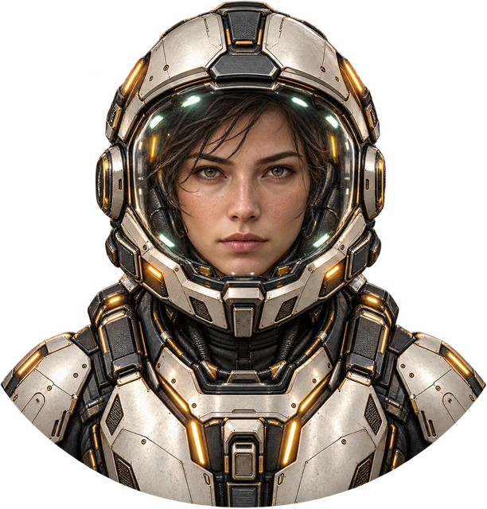

AN INFINITE LITTLE ESCAPE
NEON ORBIT™
◎
Find your rhythm.
Outlast the chaos.
Phone edition ↗BUILT FOR YOUR FLOW STATE
YOUR SCORE000000
PERSONAL BEST ✧000000
STAGE01 / ∞
HULL INTEGRITY

FLIGHT CREWVEGAFORWARD DRIVE ●
VECTOR / ↑ ▰▰▰
AEGIS WARDENORBITAL GUARDIAN
INBOUND MISSILE↑
AWAITING PILOTT+ 00:00
↗
DASH DRIVE READY
LVL 01
0 / 8
AUTO-FIRE ON
01Strafe the fieldAD or ←→ to dodge incoming fire inside the rails.
02Move along the routeW / ↑ forward; S / ↓ backward. Your guns stay pointed up-route; SPACE dashes and deploys a decoy.
03Evolve before the guardianCollect energy for visible weapons and armor. Every destination ends in a boss.